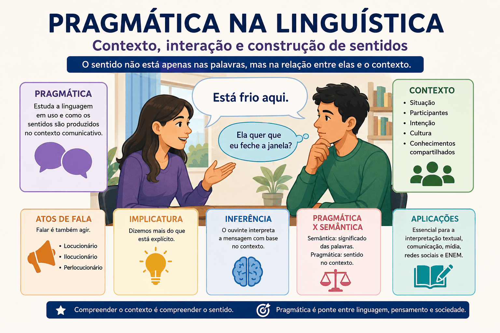

Pragmática na Linguística: Contexto, Interação e Construção de Sentidos
A faculdade da linguagem humana repousa sobre uma realidade incontornável: as línguas naturais não existem para figurar em gavetas de arquivos gramaticais ou para serem contempladas como monumentos abstratos de lógica pura. A língua vive, pulsa e transforma-se no exato instante em que seres humanos de carne e osso encontram-se em situações concretas de comunicação para negociar acordos, declarar amores, exercer o poder, instruir aprendizes, debater ideias e partilhar visões de mundo. A disciplina científica que resgatou o estudo da linguagem de seu isolamento formalista para devolvê-la à sua autêntica corporeidade social e interativa é a Pragmática.
Enquanto a Fonologia mapeia os padrões sonoros distintivos, a Morfossintaxe investiga as engrenagens combinatórias das palavras e a Semântica Formal analisa as condições lógicas de verdade das proposições, a Pragmática ocupa o vértice integrador das ciências da linguagem: ela investiga a linguagem em uso e o significado como acontecimento intersubjetivo. Como comprovaram os trabalhos fundantes de Charles Morris (1938), John L. Austin (1962), Paul Grice (1975) e Stephen Levinson (2007), o sentido de um enunciado nunca é um dado prévio congelado no dicionário: ele é cocriado dinamicamente no atrito vivo entre o texto, o contexto, as intenções do locutor e as inferências do interlocutor.
No âmbito da formação acadêmica em Letras, do ensino de Língua Portuguesa alinhado à Base Nacional Comum Curricular (BNCC), dos exames vestibulares mais concorridos do Brasil (como o ENEM e o PAES UEMA) e do desenvolvimento de tecnologias avançadas de Inteligência Artificial e Processamento de Linguagem Natural (PLN), dominar os conceitos fundamentais da Pragmática é o passaporte indispensável para decifrar como o ser humano constrói sentido e cooperação por meio das palavras.
Neste artigo acadêmico completo, você explorará o estatuto epistemológico da Pragmática na Linguística moderna, as quatro dimensões fundamentais do contexto comunicativo, a fronteira definitiva entre Semântica e Pragmática, a matriz dos grandes eixos teóricos (atos de fala, implicaturas, polidez, dêixis e relevância), a pragmática na era digital, roteiro metodológico de análise, exemplos práticos comentados, questões oficiais resolvidas e sínteses conceituais.

O estatuto epistemológico da Pragmática: origens e evolução teórica
A consolidação da Pragmática como área autônoma e indispensável das Ciências da Linguagem decorre da superação histórica de dois grandes reducionismos: o positivismo lógico (que acreditava que a língua servia apenas para afirmar verdades empíricas verificáveis) e o estruturalismo imanentista estrito (que postulava que a língua deveria ser descrita unicamente "em si mesma e por si mesma", como um sistema de regras formais isolado da sociedade e dos falantes).
A certidão de nascimento conceitual do termo remonta à célebre tríade da Semiótica delineada pelo filósofo norte-americano Charles Morris em 1938 na obra Foundations of the Theory of Signs, posteriormente refinada pelo lógico Rudolf Carnap:
A Tríade Semiótica de Charles Morris (1938)
- Sintaxe (Relação Signo-Signo): estuda as relações formais, estruturais e gramaticais que os signos mantêm entre si, independentemente de seus significados ou de seus usuários;
- Semântica (Relação Signo-Objeto): investiga a relação dos signos com as entidades do mundo real ou com os conceitos abstratos que eles designam (significado proposicional, valor de verdade e referência);
- Pragmática (Relação Signo-Usuário): examina a relação dos signos com seus utilizadores concretos, contemplando as condições biopsicossociais da enunciação, os objetivos dos falantes e os efeitos provocados nos intérpretes.
A partir das décadas de 1950 e 1960, a Pragmática ganhou impulso definitivo com a Filosofia da Linguagem Ordinária desenvolvida na Universidade de Oxford. Filósofos como Ludwig Wittgenstein (1953) — com a noção revolucionária de jogos de linguagem ("o significado de uma palavra é o seu uso na língua") — e John L. Austin (1962) demonstraram que o foco central da análise linguística não deveria ser sentenças abstratas de laboratório, mas a fala concreta do dia a dia.
A linguagem como faculdade interativa segundo Stephen Levinson
“A pragmática é o estudo das relações entre a linguagem e o contexto que são gramaticalizadas ou codificadas na estrutura de uma língua. Trata-se do estudo da capacidade dos usuários da língua de empregar sentenças adequadamente em diferentes situações comunicativas, demonstrando que a competência linguística pura é inútil sem a competência pragmático-discursiva que nos guia no mundo social” (LEVINSON, 2007, p. 27; FIORIN, 2010).
Contexto e construção de sentidos: as quatro dimensões
Na Pragmática, o contexto não é um mero cenário decorativo ou "pano de fundo" inerte: ele é um fator co-gerador e determinante da significação. Como assinala o linguista britânico John Lyons (1987), nenhum enunciado da vida humana pode ser plenamente interpretado se for arrancado de suas coordenadas situacionais.
O contexto pragmático desdobra-se em quatro dimensões indissociáveis:
As Quatro Dimensões do Contexto Pragmático
- Contexto Situacional (Físico e Imediato): abrange as coordenadas espaço-temporais em que o ato comunicativo ocorre (o aqui e o agora), bem como os objetos visíveis e a presença física dos interlocutores;
- Contexto Linguístico (Cotexto): refere-se à teia de enunciados anteriores e posteriores que antecedem ou sucedem a frase no interior do próprio texto ou diálogo, garantindo a amarração anafórica e a coerência global;
- Contexto Sociocultural e Institucional: engloba as hierarquias de poder, os papéis sociais dos participantes (médico-paciente, juiz-réu, professor-aluno), as normas culturais de polidez e os tabus compartilhados pela comunidade de fala;
- Contexto Cognitivo (Conhecimento Partilhado / Common Ground): compreende o conjunto de crenças mútuas, saberes enciclopédicos sobre o mundo e memórias discursivas compartilhadas ativamente pelos sujeitos durante a enunciação.
Considere o enunciado aparentemente trivial: “Está frio aqui.”
Isolada em uma gramática teórica, a frase apenas relata uma baixa temperatura física em dado ambiente. Contudo, ancorada no contexto vivo, ela pode desempenhar múltiplos atos de fala:
- Um pedido indireto para que alguém feche a janela ou aumente o aquecedor;
- Uma reclamação disfarçada sobre o desconforto de um quarto de hotel;
- Uma sugestão delicada para que o anfitrião ofereça um café quente ou um agasalho;
- Uma crítica metafórica fria sobre a hostilidade afetiva de um ambiente social.
Pragmática vs. Semântica: fronteiras epistemológicas e metodológicas
Embora ambas as disciplinas compartilhem a nobre missão de desvendar a significação da linguagem humana, a Semântica e a Pragmática organizam-se a partir de objetos teóricos e critérios avaliativos contrastantes:
Semântica (O Significado da Língua)
• Objeto: A sentença / frase (unidade teórica abstrata da gramática).
• Natureza: Significado literal, convencional, dicionarizado e composicional.
• Critério Avaliativo: Condições lógicas formais de verdade ou falsidade.
• Foco: O que a estrutura linguística significa em si mesma?
Pragmática (O Sentido do Falante)
• Objeto: O enunciado (a realização empírica concreta em uma cena real).
• Natureza: Sentido dinâmico, inferencial, negociado e contextualizado.
• Critério Avaliativo: Condições de felicidade, eficácia e adequação social.
• Foco: O que o falante pretende realizar ao proferir essas palavras nesta situação?
A tabela a seguir sistematiza as principais distinções conceituais entre esses dois domínios científicos:
| Critério Teórico | Semântica Formal | Pragmática Interacional |
|---|---|---|
| Unidade de Análise | Frase / Sentença descontextualizada | Enunciado historicamente situado |
| Origem do Sentido | Código linguístico e regras sintáticas | Ação social, contexto e cálculo inferencial |
| Régua de Julgamento | Verdadeiro vs. Falso (Valor de verdade) | Feliz vs. Infeliz / Adequado vs. Inadequado |
| Papel do Interlocutor | Receptor passivo do código decodificado | Coautor ativo na inferência dos sentidos |
| Exemplo Paradigmático | “Você pode abrir a porta?” = Indagação literal sobre força motora | “Você pode abrir a porta?” = Ato diretivo indireto de pedido cortês |
A língua além do sistema: José Luiz Fiorin
Como adverte o professor José Luiz Fiorin (2010), a língua não é um código estéril que opera no vazio social. A Semântica explica os limites do que o vocabulário permite dizer; a Pragmática explica como seres humanos subvertem, ampliam e transcendem esses limites em suas práticas sociais cotidianas. Reduzir a comunicação apenas à semântica literal equivale a acreditar que uma partitura musical é a própria música tocada na sala de concerto.
Os grandes eixos operacionais da Pragmática moderna
Ao longo de seu desenvolvimento no século XX e XXI, a Pragmática estruturou-se em torno de cinco grandes eixos teóricos complementares que formam o instrumental analítico dos estudos contemporâneos do discurso:
1. Teoria dos Atos de Fala (Austin e Searle)
Superando a "falácia descritiva", John L. Austin (1962) e John Searle (1969) comprovaram que dizer é fazer. Todo enunciado realiza três atos simultâneos:
- Ato Locucionário: o ato físico, fonético e sintático de verbalizar uma frase provida de sentido literal;
- Ato Ilocucionário: a força convencional ou intencional investida no dizer (ordenar, prometer, sugerir, jurar, advertir, batizar);
- Ato Perlocucionário: os efeitos concretos, psicológicos ou comportamentais gerados no ouvinte (convencer, assustar, confortar, irritar).
2. Princípio de Cooperação e Máximas Conversacionais (Paul Grice)
Paul Grice (1975, 1982) formulou a premissa de que a conversação racional é governada pelo Princípio de Cooperação, desdobrado em quatro máximas cardeais: Quantidade (seja informativo na medida certa), Qualidade (seja verídico), Relação (seja relevante e pertinente) e Modo (seja claro, breve e ordenado). A transgressão deliberada dessas máximas compele o interlocutor a calcular as implicaturas conversacionais (o sentido não dito das entrelinhas).
3. Teoria da Polidez e Gerenciamento de Faces (Brown e Levinson)
Com base na sociologia da interação de Erving Goffman (1967), Penelope Brown e Stephen Levinson (1987) demonstraram que a linguagem estrutura rituais para proteger a face positiva (o anseio de aceitação, estima e aprovação social) e a face negativa (a necessidade de liberdade, tempo e não imposição de outrem), motivando o emprego de atos indiretos e atenuadores de cortesia.
4. Dêixis e Ancoragem Enunciativa (Bühler e Benveniste)
Investiga as palavras que ligam o texto ao mundo físico exterior a partir do Origo Dêitico (Ego/quem fala, Hic/onde fala e Nunc/quando fala). Elementos deíticos como pronomes pessoais (eu, tu), advérbios espaciais (aqui, lá), temporais (agora, ontem) e desinências verbais não possuem referente empírico fixo, deslocando-se a cada nova tomada de turno no discurso.
5. Teoria da Relevância (Sperber e Wilson)
Dan Sperber e Deirdre Wilson (1995) propuseram um avanço cognitivista decisivo: a mente humana busca maximizar a relevância comunicativa, atingindo o maior ganho de informação nova com o menor esforço mental de processamento, articulando explicaturas e implicaturas.
Pragmática na era digital e nos discursos sociais
Na sociedade hiperconectada contemporânea, a Pragmática adquiriu um protagonismo sem precedentes. A circulação massiva de mensagens nas redes sociais (WhatsApp, X, Instagram, TikTok) reconfigurou os modos de produção e recepção do discurso humano:
- Emojis como Gestos Digitais (Gretchen McCulloch, 2019): na ausência do tom de voz e da presença física, os emojis atuam como marcadores prosódicos e de força ilocucionária, regulando a polidez e sinalizando ironia;
- Memes como Atos de Fala Multimodais (Limor Shifman, 2014): os memes articulam imagem, texto e intertextualidade em rede, exigindo que os internautas partilhem de um common ground cultural efêmero para decodificar suas críticas políticas e paródias;
- O Colapso de Contexto (danah boyd): nas redes abertas, públicos heterogêneos (família, amigos, colegas de trabalho e adversários ideológicos) são fundidos na mesma audiência, aumentando exponencialmente o risco de descontextualizações e mal-entendidos pragmáticos desastrosos.
A relevância da Pragmática para a interpretação textual no ENEM e vestibulares
As principais bancas examinadoras do país (como o ENEM, a UEMA, a Fuvest e a Unicamp) e os concursos públicos contemporâneos já não avaliam a simples decodificação passiva da gramática prescritiva tradicional. As provas contemporâneas são estruturadas sob a perspectiva do letramento sociopragmático crítico, exigindo que o estudante saiba:
- Identificar o Posto e o Pressuposto: reconhecer informações introduzidas de forma dissimulada por gatilhos gramaticais para desarmar armadilhas argumentativas;
- Decodificar Implicaturas e Subentendidos: compreender o que o autor insinua sem verbalizar explicitamente em crônicas, artigos de opinião e charges;
- Analisar a Força Ilocucionária de Gêneros Discursivos: interpretar por que um anúncio publicitário de saúde utiliza ordens no imperativo enquanto um parecer jurídico recorre à polidez formal atenuada;
- Avaliar o Efeito do Humor e da Ironia: demonstrar como a transgressão controlada das máximas de cooperação desmascara hipocrisias ideológicas em tirinhas de humor reflexivo.
Roteiro metodológico: como conduzir uma análise pragmática de textos
Para estudantes de Letras, educadores e analistas discursivos, a condução de uma análise pragmática rigorosa deve obedecer ao seguinte roteiro em seis etapas:
Passo a Passo da Análise Pragmático-Discursiva
- Caracterização da Cena Enunciativa e Gênero: identificar o autor projetado (ethos), o auditório pretendido, o suporte textual e a esfera da atividade humana (acadêmica, jurídica, midiática, digital);
- Mapeamento das Âncoras Deíticas: rastrear pronomes pessoais, advérbios temporais e espaciais que situam o ponto de vista do sujeito no discurso;
- Diagnóstico da Força Ilocucionária Predominante: verificar qual ato de fala governa o texto (assertivo, diretivo, compromissivo, expressivo ou declarativo), avaliando se os atos são diretos ou indiretos;
- Inspeção do Cumprimento ou Quebra das Máximas de Grice: checar se há violações ostensivas da Quantidade, Qualidade, Relação ou Modo gerando implicaturas conversacionais;
- Identificação dos Gatilhos de Pressuposição: isolar verbos de mudança de estado, advérbios de foco e orações adjetivas que inoculam premissas inquestionáveis no texto;
- Avaliação da Polidez e Eficácia Perlocucionária: julgar se as estratégias de preservação de face foram bem-sucedidas e qual o impacto ético, persuasivo ou comportamental alcançado perante o leitor.
Exemplos práticos de análise empírica aplicada
Caso 1: O enunciado ambivalente em duas cenas comunicativas
Enunciado: “Você pode abrir a porta?”
Cena A: Sala de Fisioterapia Neurológica
• Contexto Situacional: O fisioterapeuta está reabilitando os movimentos motores do braço de um paciente que sofreu um acidente vascular encefálico (AVE).
• Análise Pragmática: Trata-se de um ato assertivo interrogativo literal. O profissional indaga estritamente sobre a capacidade biomecânica do paciente de girar a maçaneta. A resposta esperada é um "Sim" ou "Não" informativo associado à tentativa de movimento motor.
Cena B: Sala de Reunião Corporativa com Ruído Externo
• Contexto Situacional: O diretor da empresa está apresentando o balanço anual, o ar condicionado falha e a sala fica quente e abafada.
• Análise Pragmática: Trata-se de um ato de fala diretivo indireto. A estrutura interrogativa atua como um pedido polido (ou ordem atenuada) para que alguém próximo à saída execute a ação física de ventilar a sala. Se o subordinado responder apenas "Sim, posso" e continuar sentado de braços cruzados, ele quebra o Princípio de Cooperação e incorre em insolência corporativa.
Caso 2: A manchete jornalística e a manipulação por pressuposto
Manchete de Noticiário Político:
“O Ministro da Economia volta a defender o corte de gastos sociais para conter a inflação.”
Análise dos Níveis Informativos de Oswald Ducrot:
1. Conteúdo Posto (Superfície): O Ministro defendeu recentemente o corte de gastos sociais para equilibrar o orçamento público;
2. Conteúdo Pressuposto (Ativado pelo verbo 'voltar a'): O Ministro já defendia essa mesma política no passado, interrompeu temporariamente as declarações e agora reitera a mesma postura contínua;
3. Efeito Pragmático-Argumentativo: Ao utilizar o verbo aspectual iterativo voltar a, o jornalista inocula no leitor a premissa de que o Ministro possui uma postura obsessiva, recorrente e inflexível, fechando o espaço para que a defesa atual seja interpretada como uma medida excepcional ou inédita.
Conclusão da análise empírica
Os dois casos comprovam de forma irrefutável que a linguagem humana nunca é um espelho neutro do mundo. Quem lê apenas as palavras navega na ignorância das formas literais; quem domina a Pragmática penetra no coração das relações de poder, das intenções e da autêntica vida social.
Questões para estudo e reflexão
Questão 1
(Concurso Público / Professor de Linguística e Língua Portuguesa) A divisão semiótica tripartite que estabeleceu as fronteiras epistemológicas entre Sintaxe, Semântica e Pragmática na teoria moderna dos signos foi formulada seminalmente por:
- A) Ferdinand de Saussure, em seu Curso de Linguística Geral.
- B) Charles Morris, em sua obra Foundations of the Theory of Signs (1938).
- C) Noam Chomsky, na obra Aspects of the Theory of Syntax (1965).
- D) Roman Jakobson, ao formular as funções da linguagem verbal.
Ver resposta comentada
Gabarito: B.
Resposta comentada: Foi o semiólogo e filósofo norte-americano Charles Morris quem, em 1938, estabeleceu a célebre partilha triádica: Sintaxe (relação formal entre signos), Semântica (relação dos signos com seus referentes e objetos) e Pragmática (relação dos signos com seus usuários e intérpretes).
Questão 2
(PAES UEMA / Letras) Em uma famosa crônica de Luís Fernando Verissimo, um marido chega tarde em casa, descalça os sapatos na ponta dos pés para não fazer barulho e encontra a esposa de braços cruzados na sala, que exclama calmamente: “São exatamente três horas e quarenta e cinco minutos da madrugada!”. Sob o prisma da Pragmática, qual a diferença entre o significado semântico e o sentido pragmático do enunciado da esposa?
Ver resposta comentada
Resposta comentada: No nível semântico-literal, o enunciado é uma mera asserção constatativa que descreve a posição dos ponteiros do relógio (informação cronológica objetiva). Contudo, no nível pragmático, a frase opera como um ato ilocucionário indireto de repreensão, cobrança moral e acusação conjugal de atraso injustificado. Ancorada no contexto relacional compartilhado, a esposa transmite a implicatura irrefutável: “Você não tem consideração por mim, quebrou nosso acordo e chegou em um horário inaceitável”.
Questão 3
(ENEM / Linguagens, Códigos e suas Tecnologias) Em um painel eletrônico de uma grande rodovia interestadual, os motoristas leem o seguinte aviso luminoso durante uma noite de neblina intensa: “Motorista: a pressa chega antes da ambulância. Acenda os faróis baixos e preserve vidas.”. Do ponto de vista dos princípios pragmáticos da comunicação, o anúncio caracteriza-se por:
- A) Uma descrição puramente científica e matemática das leis de atrito dos pneus no asfalto molhado.
- B) Um ato de fala declarativo formal que cassa a carteira de habilitação de motoristas apressados.
- C) Uma estratégia discursiva multimodal que mobiliza uma quebra irônica de expectativa mórbida (“a pressa chega antes da ambulância”) combinada a atos diretivos atenuados para gerar o efeito perlocucionário de prudência imediata.
- D) Uma falha sociopragmática involuntária decorrente da falta de clareza da linguagem rodoviária.
Ver resposta comentada
Gabarito: C.
Resposta comentada: A mensagem combina a força perlocucionária do alerta chocante com a função diretiva de segurança pública. Ao contrapor a "pressa" à chegada trágica da "ambulância", o texto força o condutor a calcular a implicatura de morte iminente, compelindo-o psicologicamente a obedecer aos comandos diretivos imediatos (acender faróis e reduzir velocidade).
Questão 4
(Exame Acadêmico / Pós-Graduação em Linguística) Por que teóricos como Oswald Ducrot e John Searle sustentam que as condições de verdade da Semântica Formal são insuficientes para dar conta da significação da linguagem natural humana?
Ver resposta comentada
Resposta comentada: Porque a semântica formal opera sob o pressuposto de que o significado de uma sentença resume-se a determinar em quais circunstâncias hipotéticas ela seria verdadeira ou falsa (valor de verdade bivalente). Contudo, na linguagem natural cotidiana, a esmagadora maioria dos enunciados não se destina a relatar estados de coisas factuais, mas a realizar ações sociais: juramentos, pedidos, ordens, promessas, batismos, advertências e saudações não são "verdadeiros nem falsos", mas felizes ou infelizes, adequados ou inadequados às convenções sociocomunicativas do contexto, exigindo a abordagem pragmática para serem explicados.
Questão 5
(Vestibular Tradicional / Filosofia da Linguagem) O que diferencia epistemologicamente a concepção de língua de Ferdinand de Saussure (no Estruturalismo) da concepção de linguagem de Ludwig Wittgenstein em suas Investigações Filosóficas (na virada pragmática)?
Ver resposta comentada
Resposta comentada: Para Saussure, a língua (langue) é um sistema autônomo, abstrato, homogêneo e formal de valores puros e oposições negativas no interior do código mental da comunidade, devendo ser estudada em isolamento de seus usos empíricos (a fala / parole). Para o segundo Wittgenstein, a essência da linguagem reside na sua práxis: ele formulou a célebre metáfora dos jogos de linguagem, demonstrando que uma palavra não possui significado fora de sua atividade humana compartilhada. O sentido é o uso vivo da linguagem em formas de vida sociais concretas, lançando as bases da Pragmática contemporânea.
Resumo da Pragmática na Linguística
- A Pragmática é a disciplina linguística que investiga a linguagem em uso social e a construção contextual dos sentidos;
- Charles Morris delimitou a semiótica em Sintaxe (signo-signo), Semântica (signo-objeto) e Pragmática (signo-usuário);
- O sentido de um enunciado é um evento dinâmico e inferencial construído pela interação entre o texto e as circunstâncias da enunciação;
- O contexto pragmático desdobra-se em quatro dimensões: situacional, cotextual, sociocultural e cognitivo (common ground);
- A Semântica analisa frases abstratas sob o critério de verdade ou falsidade; a Pragmática analisa enunciados reais sob o critério de adequação e felicidade;
- Os grandes eixos teóricos incluem os Atos de Fala (Austin e Searle), o Princípio de Cooperação (Grice), a Polidez (Brown e Levinson), a Dêixis e a Relevância (Sperber e Wilson);
- A Pragmática Digital analisa fenômenos contemporâneos como emojis (gestos digitais), memes (atos de fala multimodais) e o colapso de contexto em redes sociais;
- O domínio da Pragmática é indispensável para o letramento crítico no ENEM, para a interpretação textual avançada e para a cidadania discursiva lúcida.
Perguntas frequentes sobre Pragmática na Linguística
O que estuda a Pragmática na ciência da linguagem?
A Pragmática estuda a linguagem em uso e a relação dos signos com seus usuários e contextos reais de comunicação. Ela investiga como os sentidos emergem das interações sociais, analisando fatores contextuais, intenções dos falantes, atos de fala e inferências que extrapolam a estrutura sintática e dicionarizada.
Qual é a tríade semiótica de Charles Morris?
Em 1938, Charles Morris dividiu a Semiótica em três ramos: a Sintaxe (estudo das relações formais entre os signos), a Semântica (estudo das relações entre os signos e os objetos do mundo que eles designam) e a Pragmática (estudo das relações entre os signos e seus usuários/intérpretes).
Qual é a diferença fundamental entre Semântica e Pragmática?
A Semântica foca no significado literal, convencional e abstrato das palavras e sentenças, avaliando suas condições formais de verdade. A Pragmática debruça-se sobre o sentido do falante em enunciados concretos, avaliando a adequação social, a força ilocucionária e as condições de felicidade comunicativa.
O que constitui o contexto para a Pragmática?
O contexto não é um mero cenário passivo, mas um elemento constitutivo do sentido. Abrange o contexto situacional (espaço e tempo imediatos), o cotexto (a cadeia linguística ao redor), o contexto sociocultural (normas e hierarquias) e o contexto cognitivo (conhecimento partilhado/common ground).
Por que a Teoria dos Atos de Fala é um pilar da Pragmática?
Porque demonstrou, a partir de John Austin e John Searle, que falar não é apenas descrever estados de coisas, mas agir no mundo social. Ao proferirmos enunciados, realizamos atos locucionários (dizer algo), ilocucionários (fazer algo ao dizer) e perlocucionários (gerar efeitos no ouvinte).
O que é o Princípio de Cooperação de Paul Grice?
É a premissa de que os interlocutores em uma conversação racional colaboram mutuamente para o sucesso do diálogo, orientando-se por quatro máximas: Quantidade (informatividade adequada), Qualidade (veracidade), Relação (pertinência) e Modo (clareza).
Como a Pragmática se conecta à comunicação digital moderna?
Ela explica como emojis, memes, stickers e pontuações operam como gestos digitais e marcadores de força ilocucionária, suprindo a ausência do tom de voz e da presença física para negociar sentidos em ambientes de alta velocidade e multimodalidade.
Qual é a importância da Pragmática para a interpretação de textos em vestibulares e no ENEM?
A Pragmática fornece as ferramentas para que o estudante ultrapasse a leitura mecânica de palavras e alcance a leitura crítica das entrelinhas: identificar ironias, desmascarar pressupostos ideológicos, reconhecer intenções discursivas e avaliar a adequação da linguagem a diferentes gêneros sociais.
Considerações finais
A Pragmática devolve ao estudo da linguagem sua dimensão mais humana, política e transformadora. Ao resgatar os enunciados de sua solidão gramatical para reinseri-los no turbilhão vivo das interações sociais, a análise pragmática desvela que cada palavra proferida é um compromisso ético, um ato de engajamento social e uma aposta contínua na construção compartilhada da realidade.
Para estudantes de Letras, educadores, jornalistas, pesquisadores da Inteligência Artificial e cidadãos que desejam navegar com autonomia pela densa floresta de discursos da sociedade contemporânea, dominar a Pragmática é conquistar a bússola que permite decifrar as verdadeiras intenções que movem os homens e transformar a linguagem em instrumento genuíno de cooperação, pensamento crítico e emancipação humana.
Conteúdos relacionados
- Introdução à Pragmática: o Estudo do Uso da Linguagem em Contexto
- Deixis: a linguagem que aponta para o contexto
- Teoria dos Atos de Fala: Austin, Searle e a Ação pela Linguagem
- Princípios da Comunicação: Cooperação, Máximas de Grice e Cortesia
- Inferência e Implicatura: o Sentido Além do Literal
- Pragmática e Gêneros Textuais: a Linguagem em Ação
- Pragmática Intercultural e Variação Pragmática
- Pragmática e Ironia: O Sentido nas Entrelinhas
- Pragmática e Ironia, Sarcasmo e Humor Pragmático
- Pragmática em Discursos Midiáticos e Redes Sociais
- Pragmática | Linguagem, Contexto e Construção de Sentidos — Índice Geral
Referências
- AUSTIN, John Langshaw. Quando dizer é fazer: palavras e ação. Tradução de Danilo Marcondes de Souza Filho. Porto Alegre: Artes Médicas, 1990.
- BENVENISTE, Émile. Problemas de Linguística Geral I. Tradução de Maria da Glória Novak e Luiza Neri. Campinas: Pontes, 1966/2005.
- BROWN, Penelope; LEVINSON, Stephen C. Politeness: Some Universals in Language Usage. Cambridge: Cambridge University Press, 1987.
- DUCROT, Oswald. O dizer e o dito. Tradução de Eduardo Guimarães. Campinas: Pontes, 1987.
- FIORIN, José Luiz. Introdução à Linguística: I. Objetos Teóricos. 6. ed. São Paulo: Contexto, 2010.
- GRICE, Herbert Paul. Lógica e conversação. In: DASCAL, Marcelo (org.). Fundamentos metodológicos da linguística: pragmática. São Paulo: Cultrix, 1982. v. 4, p. 81-103.
- KERBRAT-ORECCHIONI, Catherine. A enunciação: do sujeito ao discurso. Campinas: Pontes, 2006.
- LEVINSON, Stephen C. Pragmática. Tradução de Alceu Dias Pinto e Aníbal Mari. São Paulo: Martins Fontes, 2007.
- LYONS, John. Linguagem e Linguística: uma introdução. Tradução de Hermínia da Silva e outros. Rio de Janeiro: LTC, 1987.
- MORRIS, Charles W. Foundations of the Theory of Signs. In: NEURATH, Otto; CARNAP, Rudolf; MORRIS, Charles (ed.). International Encyclopedia of Unified Science. Chicago: University of Chicago Press, 1938. v. 1, n. 2, p. 1-59.
- SEARLE, John R. Speech Acts: An Essay in the Philosophy of Language. Cambridge: Cambridge University Press, 1969.
- SPERBER, Dan; WILSON, Deirdre. Relevance: Communication and Cognition. 2. ed. Oxford: Blackwell, 1995.
- WITTGENSTEIN, Ludwig. Investigações Filosóficas. Tradução de Marcos G. Montagnoli. Petrópolis: Vozes, 1953/2014.
Explore Outros Conteúdos
Continue seus estudos acessando outras seções do site Mestre Kira: